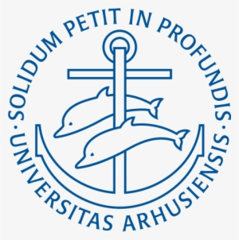

I am a postdoc researcher at Trinity College Dublin under Prof. Binh-Son Hua. I got my PhD at Trinity College Dublin in 2025, supervised by Prof. Gerry Lacey.
During my PhD, my research focused on hand-object interaction representation, 3D computer vision, and generative models.
My current research is at the intersection between graphics and 3D vision, in 4D reconstruction using Gaussian Splatting and dynamic representations.
🌟I am now seeking a job for September 2026!🌟
During my Ph.D., my research interests revolved around representation learning, meta-learning, hand-object interaction priors, generative modelling, etc. While I expressed a deep interest for the theory of deep learning and the family of latent variable models, my research was on the application of deep learning to 3D problems in the area of hand-object interaction.
Since I started my postdoc in 2024, I developed an interest for computer graphics, radiance fields, and 3D/4D reconstruction. I realized that my skills lie at the intersection between 3D computer vision and graphics.
My current research interests are: